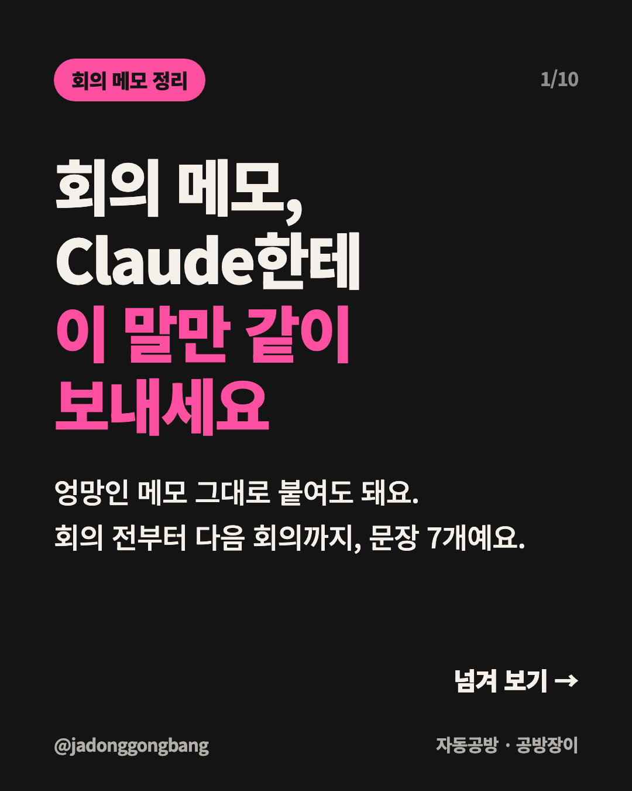
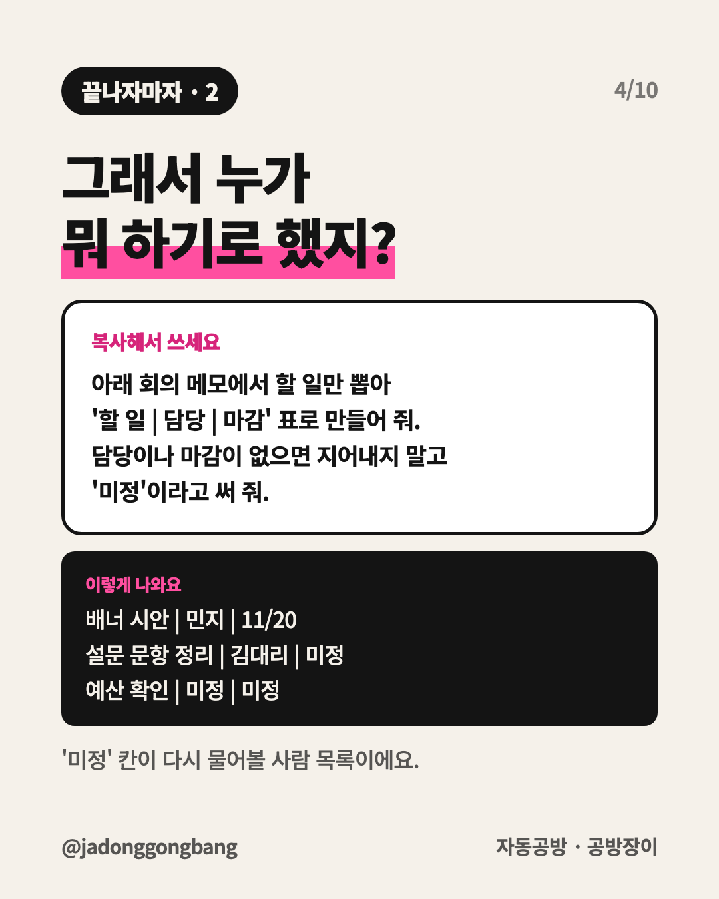
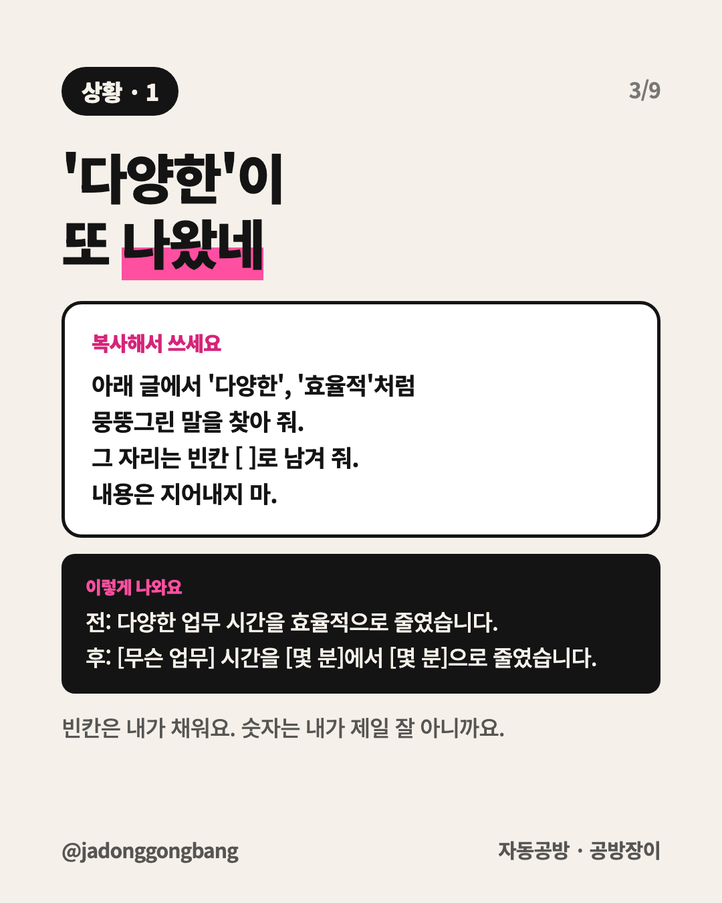

개인 · 팀
업무 자동화 설계
주간 보고나 문의 정리처럼
매주 돌아오는 일 중에 뭘 넘길지 같이 골라요.
고른 일은 정해진 시간에 혼자 돌게 만들어요.
그만큼 비는 시간은 판단하는 일에 쓰시면 돼요.
일요일 밤 누웠는데 월요일 주간 보고가 먼저 떠오르시나요.
매주 같은 칸을 다시 채우는 그 일은
AI가 먼저 해 두게 만들 수 있어요.
자동공방 공방장이예요.
제 업무 대부분도 이제 AI가 먼저 해 둬요.
폰으로 할 일을 적으면 컴퓨터의 AI 비서가 처리하고,
아침 보고는 출근 전에 와 있어요.
저도 개발자가 아니에요. 코드는 한 줄도 못 짜요.
그래서 처음에 어디서 막히는지 알아요.
그 자리부터 같이 넘어가면 돼요.
유튜브 30만 채널을 키워 본 콘텐츠 기획자예요.
지금 매일 돌아가는 자동화 7개를 아래에 다 적어 뒀어요.
주간 보고나 문의 정리처럼
매주 돌아오는 일 중에 뭘 넘길지 같이 골라요.
고른 일은 정해진 시간에 혼자 돌게 만들어요.
그만큼 비는 시간은 판단하는 일에 쓰시면 돼요.
비개발자 직장인을 위한 Claude 수업이에요.
화면을 같이 보면서 만들고,
끝날 땐 각자 자기 업무 하나를 가져가요.
인스타그램에 평일마다 하나씩 올려요.
일요일엔 그 주 내용을 PDF로 묶어 무료로 보내 드려요.
처음부터 차근차근 배우고 싶으면 Claude 교실을 읽으시면 돼요.
여기 있는 코드는 한 줄도 제가 짠 게 없어요.
원하는 걸 말하고, 나온 걸 확인했을 뿐이에요.
주제만 정하면 문구부터 영상까지 이 라인으로 나와요.
카드 속 이름과 회의는 지어낸 예시예요.



업무 하나를 골라 실제로 돌아가게 만들고, 줄어든 시간을 같이 재요.
신청은 11월 30일까지 받아요.
강의나 업무 자동화 상담은 인스타그램 DM으로 받아요.
매주 반복하는 일 하나와, 거기에 쓰는 시간을 적어 주세요.
예: "주간 보고 정리, 매주 2시간"
어떻게 줄일 수 있을지 먼저 답장드릴게요.